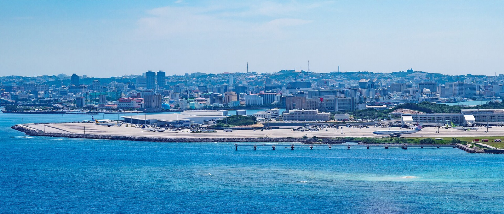

沖繩八天七夜 · 島嶼日記
八天沖繩：那霸的市場與屋台、北部的海、三天自駕跑南北。
8 天行程速覽
ITINERARY AT A GLANCE
THU2026.10.15
DAY1落地那霸：88 牛排、波上宮夕陽，晚餐挪到牧志市場挑魚，收在屋台村
FRI2026.10.16
DAY2那霸與首里：達磨寺、漫畫倉庫、通堂拉麵，傍晚 Jack's，晚上居酒屋配島唄
SAT2026.10.17
DAY3浦添線：泊港海邊咖啡、麵包店、PARCO CITY、港川外人住宅，晚餐回港町吃海鮮
SUN2026.10.18
DAY4泊港朝丼、國際通週日徒步區、女僕咖啡，傍晚浦添城跡接浦添てだこ祭
MON2026.10.19
DAY5一路北上：名護古家午餐、美麗海、古宇利海灘看日落、名護燒肉，宿名護
TUE2026.10.20
DAY6名護一路南下：海邊星巴克、青之洞窟浮潛、讀谷海崖看日落、美國村晚餐逛街，開回那霸
WED2026.10.21
DAY7開車一圈：來客夢、Ashibinaa、瀨長島日落，回那霸還車，最後一頓燒肉
THU2026.10.22
DAY8退房、計程車去機場、機場早餐、回家
 Zairon／CC BY 4.0／Wikimedia Commons
Zairon／CC BY 4.0／Wikimedia Commons
落地那霸：88 牛排、波上宮夕陽，晚餐挪到牧志市場挑魚，收在屋台村
落地那霸先吃 88 牛排，波上宮等 18:02 的日落，晚餐挪到牧志市場挑魚。
ステーキハウス88 國際通店1 小時
離峰時段，通常不用等刷卡可以營業 11:00-23:00
Google Maps
營業時間收合
營業時間
11:00 到 23:00、最後點餐 22:00，年中無休。13:30 是離峰，通常不用等。
波上宮與波之上海灘 夕陽1 小時 10 分
日落 18:0218:30 上車去市場
Google Maps
現場 · 提醒收合
現場
境內無公告閉園時間，晚間可入內。海灘那側回頭往上拍，日落 18:02 前後最好看。
提醒
神社本身很小，當散步不當景點。海邊風大，帶件薄外套。
第一牧志公設市場 持ち上げ1 小時 25 分
先問總價與代客料理費現金19:00 前挑好魚下單營業 08:00-22:00
Google Maps
先問總價 · 幾點以前收合
先問總價
先比 2 到 3 攤，問清楚總價、代客料理費與最低消費。多數攤商收現金。
幾點以前
一樓調理最後受理 19:45、二樓點餐到 20:00。19:00 前挑好魚下單。
國際通屋台村 宵夜55 分
觀光價，先看價目表半戶外，雨天邊桌會濕山羊與羊肉先問一句營業 12:00-24:00
Google Maps
營業時間 · 點餐前先問收合
營業時間
多數攤最後點餐 23:00 到 23:30、24:00 前後收，公休各攤自訂。
點餐前先問
山羊與羊肉都不吃，先講「ラム・マトンとヤギは食べられません」。
市場最晚幾點
一樓持ち上げ調理最後受理 19:45，二樓食堂點餐到 20:00。
 663highland／CC BY 2.5／Wikimedia Commons
663highland／CC BY 2.5／Wikimedia Commons
那霸與首里：達磨寺、漫畫倉庫、通堂拉麵，傍晚 Jack's，晚上居酒屋配島唄
早餐吃飯糰，上首里看達磨寺，赤嶺翻二手店，小祿吃通堂，傍晚 Jack's，晚上居酒屋。
ポーたま 牧志市場店 早餐40 分
早到隊伍短營業 07:00-17:00
Google Maps
營業與價格收合
營業與價格
07:00 到 17:00。一個 400 到 600 円，八點半這一輪隊伍通常最短。
達磨寺 西來院35 分
抓 09:30-16:30 最保險免費首里站走 5 分營業 09:30-16:30公休 週三
Google Maps
現場 · 時間收合
現場
境內免費，御朱印另計。首里站徒步 5 分，開車的話免費停車位只有五台。
時間
拜觀時間兩個說法，抓 09:30 到 16:30 最保險。電話 098-884-1077。
漫畫倉庫 那霸店1 小時 20 分
年中無休赤嶺站走 2 分營業 09:00-24:00
Google Maps
營業時間 · 有什麼收合
營業時間
本館 09:00 到 24:00、別館到 21:00，年中無休。電話 098-891-8181。
有什麼
漫畫、CD、遊戲、公仔、二手服飾與貴金屬，館內還有小型遊戲中心。
琉球新麺 通堂 小祿本店1 小時
小祿站走 3 分中午這輪隊伍短營業 11:00-24:30
Google Maps
營業時間 · 點什麼收合
營業時間
11:00 到 24:30、最後點餐 24:00，幾乎全年無休。電話 098-857-5577。
點什麼
男味是濃豚骨湯、女味是清爽雞白湯，一碗約 700 到 900 円。
壺屋やちむん通り50 分
石板路不平營業 10:00-18:00
Google Maps
現場收合
現場
多數窯元與選物店 10:00 到 18:00，公休各家自訂。石板路不平，鞋子要好走。
Jack's Steak House1 小時 25 分
基本現金，卡只收 JCB17:00 登記，19:30 要趕居酒屋週三休營業 11:00-22:00公休 週三
Google Maps
現金 · 候位收合
現金
信用卡只收 JCB，身上要備 8,000 円以上，不要只帶 Visa 或 Master。
候位
不接受訂位。17:00 到門口登記，候位 20 到 40 分，坐下吃約 55 分。
島唄と地料理 とぅばらーま 國際通店1 小時 20 分
線上訂位不用講日文表演費另計 1,210 円朋友點名的島豆腐在這裡營業 11:00-24:00要預約
Google Maps
訂位與收費 · 點什麼收合
訂位與收費
HotPepper 線上訂位，不用講日文。表演費 1,210 円/人，餐飲一人 3,500 到 5,000 円。
點什麼
島豆腐的ゴーヤーチャンプルー、海葡萄、ラフテー，配 Orion 生啤。20:00 有一場島唄。
雨天
漫畫倉庫與壺屋的店都在室內。達磨寺境內小，雨大就跳過。
 そらみみ／CC BY-SA 4.0／Wikimedia Commons
そらみみ／CC BY-SA 4.0／Wikimedia Commons
浦添線：泊港海邊咖啡、麵包店、PARCO CITY、港川外人住宅，晚餐回港町吃海鮮
泊港海邊咖啡開場，往浦添吃麵包、逛街，晚餐回那霸港町吃海鮮。
VINILE PARADISO CAFE 泊港 早餐50 分
週四五六才 08:00 開週二休營業 08:00-19:00公休 週二
Google Maps
早上時段收合
早上時段
週四五六從 08:00 開，供應現烤披薩與飲料，10/17 是週六。
hoppepan 麵包店30 分
現金週一到三休營業 10:00-19:00公休 週一、週二、週三
Google Maps
營業時間 · 現金收合
營業時間
10:00 到 19:00，只開週四到週日。電話 098-943-0703。
現金
只收現金。剛出爐的最快賣完，進門先看烤盤上有什麼再挑，買了帶著走。
PARCO CITY 浦添西海岸1 小時 40 分
週六下午是館內尖峰寄物櫃在 1F 服務台旁營業 10:00-22:00
Google Maps
營業時間 · 退稅收合
營業時間
10:00 到 22:00，週六與平日相同。西側觀景平台看得到海。
退稅
免稅櫃台在館內，同一天同一店 5,000 円以上當場退，消耗品封膜後不能拆。
廻転寿司 やざえもん PARCO CITY 店55 分
先抽號碼牌再去逛有英文菜單抽號前先看門口有沒有開營業 11:00-22:00
Google Maps
現場 · 建議點收合
現場
門口機器抽號碼牌，抽完可以先去旁邊逛。有英文菜單，刷卡可以。
建議點
鮪魚三種比較盤是招牌。11:00 到 22:00、壽司最後點餐 21:30。
港川外人住宅1 小時 35 分
順路的下午茶在這裡巷弄窄，全露天營業 11:00-18:00
Google Maps
週六都開 · 現場收合
週六都開
oHacorté 港川本店、沖縄セラードコーヒー、ほうき星、Proots、ef 週六都營業。
現場
多數店 11:00 到 18:00，一戶一戶走，整區走完約 1 小時 30 分。
さかな大統漁 漁師食堂 大ばんぶる舞1 小時 30 分
放題 3,000 円今晚沒有人開車營業 10:00-21:00
Google Maps
海鮮吃到飽收合
海鮮吃到飽
週五六 17:00 到 21:00 有海鮮食べ飲み放題，含稅 3,000 円，10/17 是週六。
雨天
港川巷弄全露天，下雨就在 PARCO CITY 多留一小時。
 663highland／CC BY 2.5／Wikimedia Commons
663highland／CC BY 2.5／Wikimedia Commons
泊港朝丼、國際通週日徒步區、女僕咖啡，傍晚浦添城跡接浦添てだこ祭
泊港朝丼，中午走封街的國際通，傍晚看浦添城跡，晚上進浦添祭。
泊いゆまち 朝丼45 分
現金全年無休營業 06:00-16:00
Google Maps
營業時間 · 付款收合
營業時間
06:00 就開、朝丼供應到 11:00，17:00 前後收攤。一碗 380 到 480 円。
付款
市場全年無休，週日照常開。多數攤位收現金。
イチバノソバ 沖繩麵55 分
辣醬先聞再倒備援 牧志そば 走 2 分營業 11:00-14:30公休 週五
Google Maps
營業時間收合
營業時間
11:00 到 14:30、最後點餐 14:00。店小、位子少，開門就到最穩。
國際通 週日行人徒步區1 小時 30 分
當天早上看官網公告全露天營業 12:00-18:00
Google Maps
提醒收合
提醒
整段全露天，十月中午還是熱，帽子與水帶著。雨天中止是常態。
BLUE EGG 沖繩 女僕咖啡1 小時
每小時 1,100 円加一杯飲料拍照規則進門先看營業 11:00-22:00
Google Maps
收費方式 · 規矩收合
收費方式
週日 11:00 到 22:00。計時制每小時 1,100 円，另外要點一杯飲料。
規矩
不能拍店員、拍照要另外買拍照券，進門前先看門口的規則牌。
浦添城跡與浦添ようどれ45 分
免費、全戶外走到祭典會場 15 分營業 09:00-21:00
Google Maps
現場 · 館內收合
現場
戶外遺跡免費，園區 09:00 到 21:00。城跡上看得到海與宜野灣一帶。
館內
浦添グスク・ようどれ館 09:00 到 17:00，這時已經收，看戶外就好。
祭典屋台晚餐55 分
現金18:50 吃完就進會場營業 15:00-20:30
Google Maps
現金 · 點餐前先問收合
現金
屋台幾乎只收現金，先準備好零錢，兩人抓 2,000 到 3,000 円。
點餐前先問
山羊與羊肉都不吃，先講「ラム・マトンとヤギは食べられません」。辣醬另外附。
浦添てだこまつり55 分
19:50 走，趕在散場前全露天，帶薄外套營業 15:00-20:30
Google Maps
時間與會場 · 回程收合
時間與會場
15:00 到 20:30，舞台在てだこ広場。本屆節目表出發前一週看浦添市公告。
回程
19:50 走，往主要道路走 10 分再叫車，回那霸抓 60 分。
明早
明早退房開車北上，今晚先把大行李整理好。徒步區雨天中止。
 Jordy Meow／CC BY-SA 3.0／Wikimedia Commons
Jordy Meow／CC BY-SA 3.0／Wikimedia Commons
一路北上：名護古家午餐、美麗海、古宇利海灘看日落、名護燒肉，宿名護
取車一路往北，美麗海看鯨鯊，古宇利海灘等 17:58 的日落，晚上住名護。
那霸 早餐（飯店或樓下超商）40 分
超商 24 小時
Google Maps
怎麼吃 · 行李收合
怎麼吃
那霸市區的 LAWSON 與 FamilyMart 多數 24 小時，飯糰、三明治帶著上車。
行李
兩個大行李箱進後車廂蓋下、不放後座，停車不留看得到的東西。
百年古家 大家（うふやー）1 小時
11:45 到，避開 12:00 那一波園區有坡道與階梯營業 11:00-16:00,18:00-21:00
Google Maps
營業時間 · 建議點收合
營業時間
午餐 11:00 到 16:00、最後點餐 15:30，年中無休。一人 1,000 到 1,800 円。
建議點
沖繩そば定食、ラフテー。12:00 後常等 30 到 60 分，11:45 到還坐得進去。
沖繩美麗海水族館1 小時 55 分
原價 2,180 円10:00-16:00 是巴士團尖峰營業 08:30-18:30
Google Maps
票價與時間 · 怎麼走收合
票價與時間
原價大人 2,180 円，08:30 到 18:30、入館締切 17:30。停留 1 小時 55 分。
怎麼走
進館直接往黑潮之海，深海與海龜海牛這趟不看。海豚劇場場次看館內看板。
KOURI SHRIMP 蒜味蝦30 分
17:00 收店，先看官方 IG外帶到海灘吃營業 11:00-17:00
Google Maps
營業時間 · 現場收合
營業時間
開到 17:00，不定休。16:15 到，點好外帶到海灘吃。
現場
櫃台點餐、叫號取餐，等餐約 20 到 30 分。調味偏重，怕鹹先講。
古宇利海灘 夕陽1 小時 25 分
日落 17:58，18:15 上車免費、有停車場
Google Maps
怎麼看 · 幾點走收合
怎麼看
沙灘上回望古宇利大橋是最好的角度，日落 17:58 前後 20 分顏色最漂亮。
幾點走
18:15 上車，40 分到名護。海邊風大帶薄外套，橋頭停車場路基落差大。
焼肉きんぐ 名護店1 小時 40 分
當天駕駛零酒精限時 100 分，21:00 離桌下午先用 App 排號營業 17:00-23:00
Google Maps
候位 · 開車的人不喝酒收合
候位
下午先用 App 或電話登記候位，叫號快到再過去。吃到飽限時 100 分。
開車的人不喝酒
今晚還要開車回飯店，明早也開車，指定一位零酒精的駕駛。
日落與開車
古宇利日落 17:58，18:15 上車。今晚開車的人不喝酒，大行李整天在後車廂。
 CEphoto, Uwe Aranas／CC BY-SA 3.0／Wikimedia Commons
CEphoto, Uwe Aranas／CC BY-SA 3.0／Wikimedia Commons
名護一路南下：海邊星巴克、青之洞窟浮潛、讀谷海崖看日落、美國村晚餐逛街，開回那霸
名護星巴克吃早餐，中午在恩納下水，傍晚讀谷海崖看日落，晚上美國村吃飯逛街。
名護 21 世紀之森 星巴克 早餐50 分
每天 07:30-21:00窗邊位置要早到營業 07:30-21:00
Google Maps
營業時間 · 位子收合
營業時間
每天 07:30 到 21:00，海灘與停車免費。09:15 進、10:05 上路。
位子
全店只有 71 席，窗邊位置要早到才搶得到。可以免費借藺草蓆坐到沙灘上。
青之洞窟 浮潛2 小時 15 分
浮潛 3,980 円起12:10 報到、13:00 出港北風天可能取消營業 08:00-16:00
Google Maps
集合 · 要自備收合
集合
12:10 在前兼久漁港報到，出港前 50 分報到；下不下水由業者當天早上判斷。
要自備
泳衣穿在裡面來、大浴巾、換洗衣物、防水袋，暈船藥上船前 30 分吃。
星野集團 BANTA CAFE1 小時 55 分
最後點餐 17:56全露天、有坡道停車前 60 分免費營業 10:00-19:00
Google Maps
收店時間 · 怎麼待收合
收店時間
平日 10:00 開，最後點餐就是日落 17:56，日落後一小時收店。
怎麼待
先點飲料佔海崖邊的位子，餐點貴又普通。18:10 上車。
タコライスcafe きじむなぁ 美浜店1 小時 10 分
今晚指定零酒精駕駛辣醬請分開附營業 11:00-22:00
Google Maps
營業時間 · 開車的人不喝酒收合
營業時間
11:00 到 22:00、最後點餐 21:30，年中無休。電話 098-989-5100。
開車的人不喝酒
吃完還要開 60 分回那霸，今晚指定一位零酒精的駕駛。
美國村 Depot Island 逛街45 分
多數店到 21:0020:55 一定要走營業 10:00-21:00
Google Maps
怎麼逛 · 補貨收合
怎麼逛
Depot Island 那幾棟最集中，海邊那一側夜景最好看。
補貨
イオン北谷店 食品區開到 23:00，零食在這裡一次買齊。
日落與開車
BANTA CAFE 最後點餐 17:56、18:10 上車。今晚指定零酒精駕駛，回那霸抓 60 分。
 Kugel~commonswiki／CC BY-SA 4.0／Wikimedia Commons
Kugel~commonswiki／CC BY-SA 4.0／Wikimedia Commons
開車一圈：來客夢、Ashibinaa、瀨長島日落，回那霸還車，最後一頓燒肉
先北上北中城逛來客夢，再南下 Ashibinaa 與瀨長島看日落，回那霸還車。
那霸 早餐（飯店或樓下超商）30 分
超商 24 小時
Google Maps
怎麼吃收合
怎麼吃
飯店自助餐或樓下超商。行李留在房間，今晚還住這裡。
AEON MALL 沖繩來客夢1 小時 50 分
10:00 開門就進去停車免費12:00 準時上車營業 10:00-22:00
Google Maps
營業時間 · 怎麼逛收合
營業時間
專門店 10:00 到 22:00、餐廳到 23:00，年中無休。停車免費。
怎麼逛
館內很大，先講好逛哪幾區：翻新的新店區、3F 沖繩物產、運動品牌。
Ashibinaa 館內午餐45 分
先繞一圈看哪家沒排隊車 18:45 才還，中午不喝酒營業 10:00-20:00
Google Maps
現場收合
現場
館內餐飲最後點餐 19:30，多數店可刷卡。先繞一圈看哪家沒排隊再坐。
沖繩 Ashibinaa Outlet1 小時 35 分
露天，會曬15:15 上車去瀨長島營業 10:00-20:00
Google Maps
營業時間 · 退稅收合
營業時間
10:00 到 20:00，整區露天。帽子、水與防曬帶著，十月下午還是曬。
退稅
免稅櫃台在服務中心，同一天同一店 5,000 円以上當場退，記得帶護照。
幸せのパンケーキ 瀨長島店 下午茶1 小時 5 分
這個時段只吃得到甜鬆餅候位抓 25 分14 天前開放網路訂位營業 11:00-20:00
Google Maps
營業與候位 · 訂位收合
營業與候位
各家寫的營業時間不一，抓 11:00 到 20:00。15:35 抽號，候位抓 25 分。
訂位
官網網路訂位用餐日前 14 天開放，每帳號最多四人，先訂比較穩。
瀨長島 Umikaji Terrace 夕陽1 小時 10 分
日落 17:56階梯多、全露天18:00 上車，車還沒還別喝營業 10:00-21:00
Google Maps
營業時間 · 怎麼看收合
營業時間
物販 10:00 到 20:00、餐飲 11:00 到 21:00，年中無休。整區露天、階梯多。
怎麼看
最上排的平台正對海與跑道，飛機起降跟落日在同一個畫面裡。
焼肉 もとぶ牧場 那霸店1 小時 30 分
線上訂位不用講日文車已經還掉，今晚兩個人都可以喝不定休，行前再確認一次營業 17:00-22:00
Google Maps
訂位與價格 · 營業時間收合
訂位與價格
TableCheck 線上訂位、不用講日文。套餐 6,900、8,400、13,000 円三種。
營業時間
晚餐 17:00 到 22:00、最後點餐 21:30，不定休。出發前一週用官網再確認一次。
今天要還車
18:00 離開瀨長島，先加滿油，18:45 進營業所。還車前不喝酒。

TurnOnTheNight／CC BY-SA 4.0／Wikimedia Commons退房、計程車去機場、機場早餐、回家
今天沒有車也沒有事：08:15 退房，計程車 15 分到機場，11:50 起飛。
前一晚要做的事
請櫃檯訂好 08:15 的計程車，兩個大行李箱直接上車，車程只要 15 分。